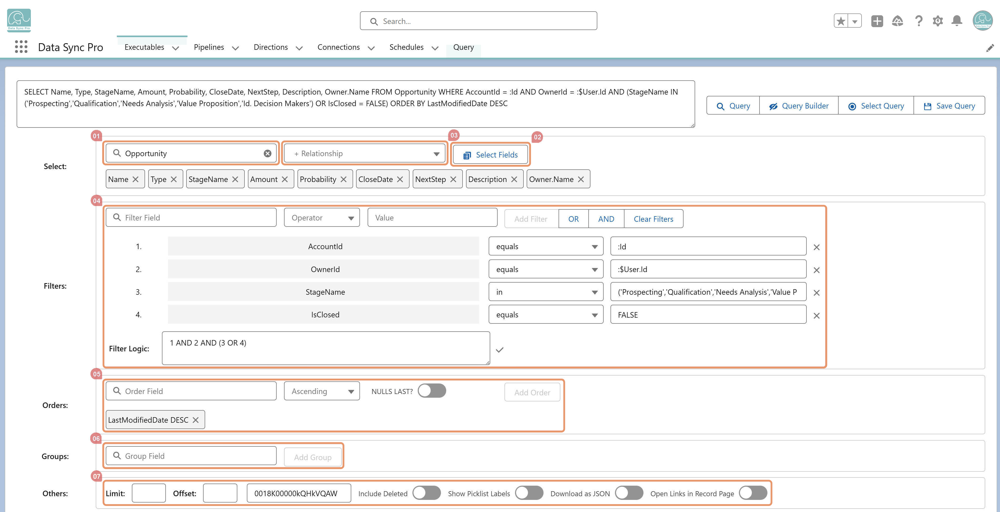

Query Builder provides an interactive, step-by-step interface for assembling SOQL queries — no manual syntax required:
Object Selection: Start typing an object name to quickly find and select it.
Field Selection: Pick fields from the object or parent relationships, reorder them, and filter as needed.
Relationship Selection: Navigate and include up to 5 levels of parent relationships.
Filters: Select a field, operator (based on field type), and value—with syntax applied automatically.
Complex Filter Logic: Define advanced conditions using natural language expressions.
Sorting: Add fields in ascending or descending order.
Grouping: Define GROUP BY fields for aggregations.
